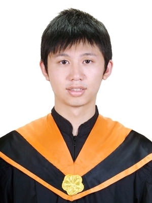

| Profile | |
|---|---|
| Name: Li-Po, Chou |  |
| Gender: Male | |
| Location: Taiwan | |
| Birth: 1983/07/17 | |
| Mobile: 0933-101-441 | |
| E-mail: alvin5468@yahoo.com.tw | |
| Speciality: Software programming, Good communication with customers, Good cooperation between different divisions(PM, HW, QT, SW) | |
| Personality: ambitious, creative, positive thinking, target orientation, outgoing | |
| Working experience | |
| ALi Incorporation: Software engineer | 2012/03~present |
| Wistron Incorporation: Software engineer | 2008/01~2012/02 |
| Education | |
| National Central Univrsity, Jhongli, Taiwan Master of Electrical Engineering |
2005/09~2007/06 |
| National Taiwan Ocean Univrsity, Keelung, Taiwan Bachelor of Electrical Engineering |
2001/09~2005/06 |
| Honors | |
| Third-Runner up Macronix Golden Silicon Awards 7th Semiconductor Design and Application Competition |
2007/07 |
| International conference paper | |
| Li-Po Chou and W.J. Wang, "A humanoid robot with motion imitation ability,"
International Conference on Machine Learning and Cybernetics 2007, Hong Kong, China, August 19-22, 2007. |
|
| Patent | |
| Method of Picture Display and Device Thereof | 2010/10 |
| Research Activities | |
| Graduate Thesis - "A Humanoid Robot with Motion Imitation ability" | 2005/9~2007/06 |
| Undergraduate Project - "A Design and Implementation of Automatic Vehicle." | 2003/02~2003/06 |
| Skill | |
| Fluent in English [TOEIC 800], Native in Mandarin | Languages |
| C/C++, HTML/CSS , JavaScript/jQuery, PHP, Matlab | Computer Languages |
| 1.Rework PCB board ability. 2.Debug issue by using oscilloscope |
Hardware |
|
1.SW project development by using C/C++ based on Linux embedded system board.(Sigma design solution) 2.SW project development using C based on MCU(Atmel) 3.GPIO, I2C, SPI, UART control based on MCU(Atmel) 4.SW project development based on ALi RTOS solution 5.SW project development based on ALi Linux solution |
Embedded system |
|
1.SW project development by using C/C++ based on Linux embedded system board.(Sigma design) 2.Familiar with linux relative command and development tool (makefile, shell script, svn) 3.Good at "Digital Image process" and "Image recognition" by using Borland C++ Builder 4.Good at MATLAB to do smulation about Control and Digital Image process 5.GUI implementation using Borland C++ Builder |
Software |